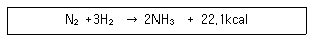
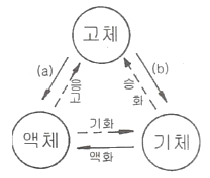
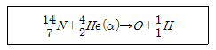
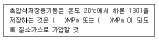

위험물산업기사 (2014-05-25 기출문제)
1과목: 일반화학
1. 염화칼슘의 화학식량은 얼마인가? (단, 염소의 원자량은 35.5, 칼슘의 원자량은 40, 황의 원자량은 32, 요오드의 원자량은 127 이다.)
- 111
- 121
- 131
- 141
(정답률: 81%)

2. 방사성 동위원소의 반감기가 20일 일 때 40일이 지난 후 남은 원소의 분율은?
- 1/2
- 1/3
- 1/4
- 1/6
(정답률: 78%)
3. BF3 는 무극성 분자이고 NH3 는 극성 분자이다. 이 사실과 가장 관계가 있는 것은?
- 비공유 전자쌍은 BF3 에는 있고 NH3 에는 없다.
- BF3는 공유 결합 물질이고 NH3는 수소 결합 물질이다.
- BF3는 평면 정삼각형이고 NH3는 피라미드형 구조이다.
- BF3 는 sp3 혼성 오비탈을 하고 있고 NH3는 sp2 혼성 오비탈을 하고 있다.
(정답률: 86%)
4. 수소와 질소로 암모니아를 합성하는 반응의 화학반응식은 다음과 같다. 암모니아의 생성률을 높이기 위한 조건은?

- 온도와 압력을 낮춘다.
- 온도는 낮추고, 압력은 높인다.
- 온도를 높이고, 압력은 낮춘다.
- 온도와 압력을 높인다.
(정답률: 74%)
5. 찬물을 컵에 담아서 더운 방에 놓아 두었을 때 유리와 물의 접촉면에 기포가 생기는 이유로 가장 옳은 것은?
- 물의 증기 압력이 높아지기 때문에
- 접촉면에서 수증기가 발생하기 때문에
- 방안의 이산화탄소가 녹아 들어가기 때문에
- 온도가 올라갈수록 기체의 용해도 가 감소하기 때문에
(정답률: 80%)
6. 질소 2몰과 산소 3몰의 혼합기체가 나타나는 전압력이 10기압 일 때 질소의 분압은 얼마인가?
- 2기압
- 4기압
- 8기압
- 10기압
(정답률: 77%)
7. 물 500g 중에 설탕(C12H22O11) 171g 이 녹아 있는 설탕물의 몰랄농도는?
- 2.0
- 1.5
- 1.0
- 0.5
(정답률: 71%)
8. 같은 온도에서 크기와 같은 4개의 용기에 다음과 같은 양의 기체를 채웠을 때 용기의 압력이 가장 큰 것은?
- 메탄 분자 1.5×1023
- 산소 1그램 당량
- 표준상태에서 CO2 16.8L
- 수소기체 1g
(정답률: 68%)
9. 11g 의 프로판이 연소하면 몇 g 의 물이 생기는가?
- 4
- 4.5
- 9
- 18
(정답률: 61%)
10. 포화 탄화수소에 해당하는 것은?
- 톨루엔
- 에틸렌
- 프로판
- 아세틸렌
(정답률: 73%)
11. 다음 중 나타내는 수의 크기가 다른 하나는?
- 질소 7g 중의 원자수
- 수소 1g 중의 원자수
- 염소 71g 중의 분자수
- 물 18g 중의 분자수
(정답률: 61%)
12. 분자 운동에너지와 분자간의 인력에 의하여 물질의 상태 변화가 일어난다. 다음 그림에서 (a),(b)의 변화는?

- (a)융해, (b)승화
- (a)승화, (b)융해
- (a)응고, (b)승화
- (a)승화, (b)응고
(정답률: 93%)
13. 96wt% H2SO4(A)와 60wt% H2SO4(B)를 혼합하여 80wt% H2SO4 100kg 만들려고 한다. 각각 몇 kg 씩 혼합하여야 하는가?
- A : 30, B : 70
- A : 44.4, B : 55.6
- A : 55.6, B : 44.4
- A : 70, B : 30
(정답률: 73%)
14. 8g 의 메탄을 완전연소시키는데 필요한 산소분자의 수는?
- 6.02×1023
- 1.204×1023
- 6.02×1024
- 1.204×1024
(정답률: 67%)
15. 같은 질량의 산소 기체와 메탄 기체가 있다. 두 물질이 가지고 있는 원자수의 비는?
- 5 : 1
- 2 : 1
- 1 : 1
- 1 : 5
(정답률: 65%)
16. KMnO4에서 Mn 의 산화수는 얼마인가?
- +3
- +5
- +7
- +9
(정답률: 91%)
17. 다음 산화수에 대한 설명 중 틀린 것은?
- 화학결합이나 반응에서 산화, 환원을 나타내는 척도이다.
- 자유원소 상태의 원자의 산화수는 0 이다.
- 이온결합 화합물에서 각 원자의 산화수는 이온 전하의 크기와 관계 없다.
- 화합물에서 각 원자의 산화수는 총합이 0 이다.
(정답률: 83%)
18. 다음 핵화학반응식에서 산소(0)의 원자번호는 얼마인가?

- 6
- 7
- 8
- 9
(정답률: 77%)
19. 다음 물질 중 감광성이 가장 큰 것은 무엇인가?
- HgO
- CuO
- NaNO3
- AgCl
(정답률: 83%)
20. 분자량의 무게가 4배이면 확산 속도는 몇 배인가?
- 0.5배
- 1배
- 2배
- 4배
(정답률: 70%)
2과목: 화재예방과 소화방법
21. 다음 각각의 위험물의 화재 발생시 위험물안전관리법령상 적응 가능한 소화설비를 옳게 나타낸 것은?
- C6H5NO2 : 이산화탄소소화기
- (C2H5)3Al : 봉상수소화기
- C2H5OC2H5 : 봉상수소화기
- C3H5(ONO2)3 : 이산화탄소소화기
(정답률: 57%)
22. 이산화탄소소화설비의 저압식저장용기에 설치하는 압력경보장치의 작동압력은?
- 1.9MPa 이상의 압력 및 1.5MPa 이하의 압력
- 2.3MPa 이상의 압력 및 1.9MPa 이하의 압력
- 3.75MPa 이상의 압력 및 2.3MPa 이하의 압력
- 4.5MPa 이상의 압력 및 3.75MPa 이하의 압력
(정답률: 80%)
23. 중유의 주된 연소 형태는?
- 표면연소
- 분해연소
- 증발연소
- 자기연소
(정답률: 64%)
24. 제조소 건축물로 외벽이 내화구조인 것의 1소요단위는 연면적이 몇 m2 인가?
- 50
- 100
- 150
- 1000
(정답률: 80%)
25. 다음 중 분말소화약제의 주된 소화작용에 가장 가까운 것은?
- 질식
- 냉각
- 유화
- 제거
(정답률: 91%)
26. 다음 중 전기의 불량도체로 정전기가 발생되기 쉽고 폭발범위가 가장 넓은 위험물은?
- 아세톤
- 톨루엔
- 에틸알콜
- 에틸에테르
(정답률: 65%)
27. 위험물제조소에서 취급하는 제4류 위험물의 최대수량의 합이 지정수량의 15만배인 사업소에 두어야 할 자체소방대의 화학소방자동차와 자체소방대원의 수는 각각 얼마로 규정되어 있는가? (단, 상호응원협정을 체결한 경우는 제외한다.)
- 1대, 5인
- 2대, 10인
- 3대, 15인
- 4대, 20인
(정답률: 71%)
28. 위험물제조소등에 설치하는 옥내소화전설비의 설명 중 틀린 것은?
- 개폐밸브 및 호스 접속구는 바닥으로부터 1.5m 이하에 설치
- 함의 표면에서 “소화전”이라고 표시할 것
- 축전지설비는 설치된 벽으로부터 0.2m 이상 이격할 것
- 비상전원의 용량은 45분 이상일 것
(정답률: 82%)
29. 알코올 화재시 수성막포 소화약제는 효과가 없다. 그 이유로 가장 적당한 것은?
- 알코올이 수용성이어서 포를 소멸시키므로
- 알코올이 반응하여 가연성 가스를 발생하므로
- 알코올 화재시 불꽃의 온도가 매우 높으므로
- 알코올이 포소화약제와 발열반응을 하므로
(정답률: 88%)
30. 분말소화약제인 탄산수소나트륨 10kg 이 1기압, 270℃에서 방사되었을 때 발생하는 이산화탄소의 양은 약 몇 m3 인가?
- 2.65
- 3.65
- 18.22
- 36.44
(정답률: 56%)
31. 트리니트로톨루엔에 대한 설명으로 틀린 것은?
- 햇빛을 받으면 다갈색으로 변한다.
- 벤젠, 아세톤 등에 잘 녹는다.
- 건조사 또는 팽창질석만 소화설비로 사용할 수 있다.
- 폭약의 원료로 사용될 수 있다.
(정답률: 62%)
32. 제3종 분말소화약제를 화재면에 방출시 부착성이 좋은막을 형성하여 연소에 필요한 산소의 유입을 차단하기 때문에 연소를 중단시킬 수 있다. 그러한 막을 구성하는 물질은?
- H3PO4
- PO4
- HPO3
- P2O5
(정답률: 73%)
33. 경보 설비는 지정 수량 몇 배 이상의 위험물을 저장, 취급하는 제조소등에 설치하는가?
- 2
- 4
- 8
- 10
(정답률: 84%)
34. BLEVE 현상에 대한 설명으로 가장 옳은 것은?
- 기름탱크에서의 수증기 폭발현상
- 비등상태의 액화가스가 기화하여 팽창하고 폭발하는 현상
- 화재시 기름 속의 수분이 급격히 증발하여 기름거품이 되고 팽창해서 기름탱크에서 밖으로 내뿜어져 나오는 현상
- 원유, 중유 등 고점도의 기름 속에 수증기를 포함한 볼형태의 물방울이 형성되어 탱크 밖으로 넘치는 현상
(정답률: 72%)
35. 다음은 위험물안전관리법령에 따른 할로겐화물소화설비에 관한 기준이다. ( )에 알맞은 수치는?

- 0.1, 1.0
- 1.1, 2.5
- 2.5, 1.0
- 2.5, 4.2
(정답률: 54%)
36. 피리딘 20000 리터에 대한 소화설비의 소요단위는?
- 5 단위
- 10 단위
- 15 단위
- 100 단위
(정답률: 70%)
37. 표준상태에서 적린 8mol 이 완전 연소하여 오산화인을 만드는데 필요한 이론 공기량은 약 몇 L 인가? (단, 공기 중 산소는 21vol% 이다.)
- 1066.7
- 806.7
- 224
- 22.4
(정답률: 57%)
38. 위험물 이동탱크저장소 관계인은 해당 제조소등에 대하여 년간 몇 회 이상 정기점검을 실시하여야 하는가? (단, 구조안전점검 외의 정기점검인 경우이다.)
- 1회
- 2회
- 4회
- 6회
(정답률: 87%)
39. 위험물제조소등에 설치하는 포소화설비의 기준에 따르면 포헤드방식의 포헤드는 방호대상물의 표면적 1m2 당의 방사량이 몇 L/min 이상의 비율로 계산한 양의 포수용액을 표준방사량으로 방사할 수 있도록 설치하여야 하는가?
- 3.5
- 4
- 6.5
- 9
(정답률: 69%)
40. 위험물저장소 건축물의 외벽이 내화구조인 것은 연면적 얼마를 1 소요단위로 하는가?
- 50m2
- 75m2
- 100m2
- 150m2
(정답률: 76%)
3과목: 위험물의 성질과 취급
41. 다음 중 나트륨의 보호액으로 가장 적합한 것은?
- 메탄올
- 수은
- 물
- 유동파라핀
(정답률: 81%)
42. 벤젠의 일반적 성질에 관한 사항 중 틀린 것은?
- 알코올, 에테르에 녹는다.
- 물에는 녹지 않는다.
- 냄새는 없고 색상은 갈색인 휘발성 액체이다.
- 증기 비중은 약 2.8 이다.
(정답률: 71%)
43. 인화석회가 물과 반응하여 생성하는 기체는?
- 포스핀
- 아세틸렌
- 이산화탄소
- 수산화칼슘
(정답률: 81%)
44. 위험물안전관리법령에 의한 위험물제조소의 설치기준으로 옳지 않는 것은?
- 위험물을 취급하는 기계, 기구, 기타설비에 새거나 넘치거나 비산하는 것을 방지할 수 있는 구조로 한다.
- 위험물을 가열하거나 냉각하는 설비 또는 위험물 취급에 따라 온도변화가 생기는 설비에는 온도 측정 장치를 설치하여야 한다.
- 정전기 발생을 유효하게 제거할 수 있는 설비를 설치한다.
- 스테인리스관을 지하에 설치 할 때는 지진, 풍압, 지반, 침하, 온도 변화에 안전한 구조의 지지물을 설치한다.
(정답률: 80%)
45. 다음 반응식 중에서 옳지 않는 것은?
- CaO2 + 2HCl → CaCl2 + H2O2
- CaH2 + 2H2O → Ca(OH)2 + 2H2
- Ca3P2 + 4H2O → Ca3(OH)2 + 2PH3
- CaC2 + 2H2O → Ca(OH)2 + C2H2
(정답률: 67%)
46. 과산화수소의 성질 및 취급방법에 관한 설명 중 틀린 것은?
- 햇빛에 의하여 분해한다.
- 인산, 요산 등의 분해방지 안정제를 넣는다.
- 저장 용기는 공기가 통하지 않게 마개로 꼭 막아둔다.
- 에탄올에 녹는다.
(정답률: 85%)
47. 위험물안전관리법령에 따른 위험물제조소 건축물의 구조로 틀린 것은?
- 벽, 기둥, 서까래 및 계단은 난연재료로 할 것
- 지하층이 없도록 할 것
- 출입구에는 갑종 또는 을종 방화문을 설치할 것
- 창에 유리를 이용하는 경우에는 망입유리로 할 것
(정답률: 72%)
48. 제1류 위험물의 일반적인 성질이 아닌 것은?
- 불연성 물질들이다.
- 유기화합물들이다.
- 산화성 고체로서 강산화제이다.
- 알칼리금속의 과산화물은 물과 작용하여 발열한다.
(정답률: 67%)
49. 다음 중 메탄올의 연소범위에 가장 가까운 것은?
- 약 1.4 ~ 5.6%
- 약 7.3 ~ 36%
- 약 20.3 ~ 66%
- 약 42.0 ~ 77%
(정답률: 78%)
50. 제4류 위험물 중 제1석유류에 속하는 것으로만 나열한 것은?
- 아세톤, 휘발유, 톨루엔, 시안화수소
- 이황화탄소, 디에틸에테르, 아세트알데히드
- 메탄올, 에탄올, 부탄올, 벤젠
- 중유, 크레오소트유, 실린더유, 의산에틸
(정답률: 74%)
51. 위험물안전관리법령에 따라 제4류 위험물 옥내저장탱크에 설치하는 밸브 없는 통기관의 설치기준으로 가장 거리가 먼 것은?
- 통기관의 지름은 30mm 이상으로 한다.
- 통기관의 선단은 수평면에 대하여 아래로 45도 이상 구부려 설치한다.
- 통기관은 가스가 체류되지 않도록 그 선단을 건축물의 출입구로부터 0.5m 이상 떨어진 곳에 설치하고 끝에 팬을 설치한다.
- 가는 눈의 구리망 등으로 인화방지 장치를 한다.
(정답률: 63%)
52. 위험물안전관리법령상 제1석유류를 취급하는 위험물 제조소의 건축물의 지붕에 대한 설명으로 옳은 것은?
- 항상 불연재료로 하여야 한다.
- 항상 내화구조로 하여야 한다.
- 가벼운 불연재료가 원칙이지만 예외적으로 내화구조로 할 수 있는 경우가 있다.
- 내화구가 원칙이지만 예외적으로 가벼운 불연료로 할 수 있는 경우가 있다.
(정답률: 64%)
53. 가열했을 때 분해하여 적갈색의 유독한 가스를 방출하는 것은?
- 과염소산
- 질산
- 과산화수소
- 적린
(정답률: 77%)
54. 위험물안전관리법령에서 정한 이황화탄소의 옥외탱크 저장시설에 대한 기준으로 옳은 것은?
- 벽 및 바닥의 두께가 0.2m 이상이고 누수가 되지 아니하는 철근콘크리트의 수조에 넣어 보관하여야 한다.
- 벽 및 바닥의 두께가 0.2m 이상이고 누수가 되지 아니하는 철근콘크리트의 석유조에 넣어 보관하여야 한다.
- 벽 및 바닥의 두께가 0.3m 이상이고 누수가 되지 아니하는 철근콘크리트의 수조에 넣어 보관하여야 한다.
- 벽 및 바닥의 두께가 0.3m 이상이고 누수가 되지 아니하는 철근콘크리트의 석유조에 넣어 보관하여야 한다.
(정답률: 64%)
55. 금속칼륨의 성질로서 옳은 것은?
- 중금속류에 속한다.
- 화학적으로 이온화 경향이 큰 금속이다.
- 물 속에 보관한다.
- 상온, 상압에서 액체형태인 금속이다.
(정답률: 78%)
56. 위험물안전관리법령에 따라 지정수량 10배의 위험물을 운반할 때 혼재가 가능한 것은?
- 제1류 위험물과 제2류 위험물
- 제2류 위험물과 제3류 위험물
- 제3류 위험물과 제4류 위험물
- 제5류 위험물과 제6류 위험물
(정답률: 86%)
57. 적린과 황린의 공통점이 아닌 것은?
- 화재발생시 물을 이용한 소화가 가능하다.
- 이황화탄소에 잘 녹는다.
- 연소시 P2O5 의 흰 연기가 생긴다.
- 구성원소는 P 이다.
(정답률: 59%)
58. 위험물안전관리법령에 따른 제1류 위험물 중 알칼리금속의 과산화물 운반 용기에 반드시 표시하여야 할 주의사항을 모두 옳게 나열한 것은?
- 화기·충격주의, 물기엄금, 가연물접촉주의
- 화기·충격주의, 화기엄금,
- 화기엄금, 물기엄금,
- 화기·충격엄금, 가연물접촉주의
(정답률: 88%)
59. 트리니트로페놀의 성질에 대한 설명 중 틀린 것은?
- 폭발에 대비하여 철, 구리로 만든 용기에 저장한다.
- 휘황색을 띤 침상결정이다.
- 비중이 약 1.8로 물보다 무겁다.
- 단독으로는 충격, 마찰에 둔감한 편이다.
(정답률: 82%)
60. A 업체에서 제조한 위험물을 B 업체로 운반할 때 규정에 의한 운반용기에 수납하지 않아도 되는 위험물은? (단, 지정수량의 2배 이상인 경우이다.)
- 덩어리 상태의 유황
- 금속분
- 삼산화크롬
- 염소산나트륨
(정답률: 87%)